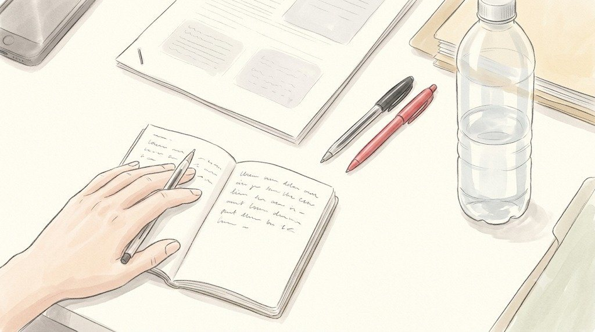
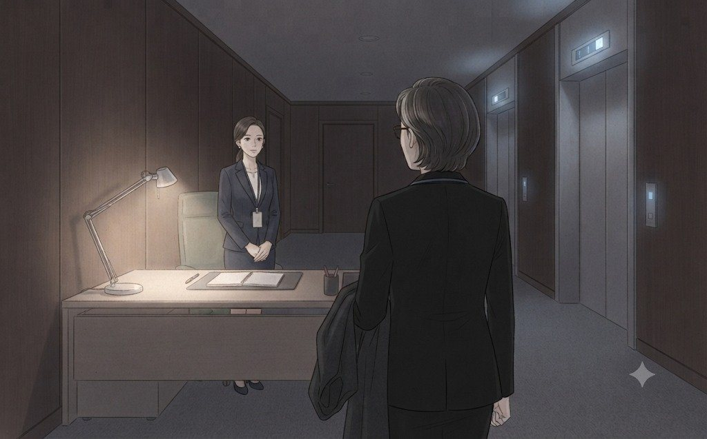
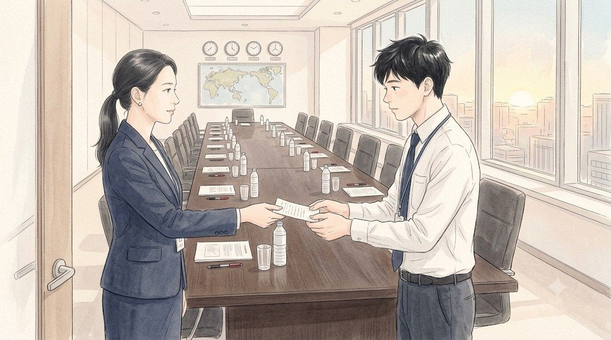

2011년 3월 2일, 오전 6시 50분. 청연타워 32층, 청연그룹 본사.
양은주는 스물다섯 살이었다. 청연그룹 비서팀 2년차. 그날 그녀는 새로 부임하는 재무담당 상무의 비서로 발령을 받았다. 문혜경. 청연그룹 최초의 여성 재무 임원.
비서팀장 박영란 부장이 전날 그녀를 불러 말했다.
"은주 씨. 이번 상무님, 쉽지 않을 거야. 앞의 비서 둘이 석 달을 못 버텼어. 재무팀에 있을 때."
"왜요?"
"말을 안 해. 뭘 원하는지. 근데 틀리면 다 알아."
첫날 아침 7시 정각. 문혜경이 사무실에 들어왔다. 양은주는 일어나 인사했다. 문혜경은 짧게 고개를 끄덕이고 방으로 들어갔다. 문이 닫혔다.
양은주는 미리 준비해 둔 것을 들고 노크했다. 따뜻한 커피, 차가운 생수, 그날의 조간신문 세 부.
"놓고 가세요."
문혜경은 고개도 들지 않았다. 양은주는 쟁반을 내려놓고 나왔다.
30분 뒤, 방에서 문혜경이 나왔다. 손에 생수병이 들려 있었다. 뚜껑도 따지 않은 채였다.
"양은주 씨. 내일부터 물은 상온으로 주세요."
"네. 혹시 이유를..."
"차가운 물은 회의 중에 마시면 목이 잠겨요."
그게 첫 번째 원칙이었다.
일주일 뒤, 두 번째 원칙이 생겼다. 회의실 볼펜은 검정과 빨강, 한 자루씩. 파랑은 두지 말 것. 이유는 묻지 않았다. 석 달 뒤 양은주는 그 이유를 우연히 알게 되었다. 문혜경이 신입 시절 첫 보고서를 파란 볼펜으로 고쳤다가, 상사에게 '장난하냐'는 말을 들었다고 했다. 재무팀 회식 자리에서 다른 비서가 전해 준 이야기였다.
양은주는 그 뒤로 문혜경의 원칙을 하나씩 수첩에 적었다. 이유를 아는 것도, 모르는 것도.

'생수는 상온. 라벨은 앉은 사람 쪽으로.'
'볼펜은 검정과 빨강. 파랑 금지.'
'회의 시작 10분 전 입실. 5분 전이면 늦은 것.'
'보고서는 왼쪽 위 스테이플러. 오른쪽이면 다시.'
'사장님이 '좋네요'라고 하면 진짜 좋은 것. '그래요'는 다시 하라는 것.'
석 달이 지났다. 양은주는 버텼다. 앞의 비서 둘이 버티지 못한 이유를 그녀는 알 것 같았다. 문혜경은 말하지 않는 사람이 아니었다. 같은 말을 두 번 하지 않는 사람이었다.
2015년 11월 20일, 금요일 밤 11시. 32층.
문혜경은 그해 전무가 되었다. 양은주도 따라 올라왔다. 그날 밤, 양은주는 퇴근하지 못하고 있었다. 문혜경의 방에 불이 켜져 있었기 때문이다.
자정이 가까울 무렵, 방문이 열렸다. 문혜경이 나왔다. 코트를 들고 있었다. 그런데 걸음이 평소와 달랐다.
"양은주 씨, 아직 있었어요?"
"네. 상무님... 아니, 전무님 계셔서요."
"가세요. 나 기다리지 말고."
문혜경은 엘리베이터 쪽으로 걸어가다 멈췄다. 그리고 등을 돌린 채 말했다.
"오늘 우리 어머니 기일이에요."

양은주는 아무 말도 하지 못했다.
"매년 이날은 일찍 가려고 하는데, 매년 못 가요. 이번에도 못 갔네요."
그날 처음으로 양은주는 문혜경의 목소리가 흔들리는 것을 들었다. 단 한 문장이었다. 다음 문장은 다시 평소와 같았다.
"월요일 아침 회의 자료, 7시까지 책상에 놔 주세요."
양은주는 그날 밤 수첩에 원칙 하나를 더 적었다. 문혜경에게 받은 원칙이 아니라, 자기가 정한 원칙이었다.
'11월 20일. 오후 일정 비울 것. 이유는 말하지 말 것.'
그 뒤로 5년 동안, 그날 오후 문혜경의 일정표는 늘 비어 있었다. 문혜경은 그 이유를 한 번도 묻지 않았다.
2021년 5월, 토요일 오전 5시 40분. 청연타워 29층.
양은주는 서른다섯 살이 되었다. 문혜경 사장을 모신 지 10년. 그녀는 대회의실 문 앞에서 이우진과 마주쳤다.
"이 과장님, 오늘도 일찍 오셨네요."
"과장님이 더 일찍 오셨잖아요."
양은주는 웃었다. 그리고 회의실 안을 한 바퀴 둘러봤다. 생수 열여섯 병. 라벨은 모두 앉을 사람 쪽을 향해 있었다. 검정과 빨강 볼펜. 출력본의 스테이플러는 왼쪽 위.
다 맞았다. 한 달 전 그녀가 처음 알려 준 그대로였다.
"이 과장님, 하나 물어봐도 돼요?"
"네."
"제가 처음에 이거 다 알려 드릴 때, 이유는 하나도 안 말씀드렸잖아요. 왜 안 물어보셨어요?"
이우진은 잠깐 생각했다.
"물어보면 안 될 것 같았어요. 과장님 얼굴이요. 이유를 아시는데, 말하면 안 되는 이유 같았어요."
양은주는 이우진을 오래 봤다. 서른여섯 살. 회의록을 쓰는 사람. 남이 하지 않은 말까지 듣는 사람.
"이 과장님은 좋은 비서가 됐을 거예요."
"칭찬이죠?"
"제일 큰 칭찬이에요."
그녀는 가방에서 작은 종이 한 장을 꺼냈다. 수첩에서 찢은 것 같았다.

"이거 드릴게요. 이 과장님만."
종이에는 다섯 줄이 적혀 있었다. 양은주의 글씨였다.
'좋네요 - 진짜 좋은 것.'
'그래요 - 다시 하라는 것.'
'숫자를 두 번 물으면 - 그 숫자를 믿지 않는 것.'
'볼펜을 내려놓으면 - 들을 준비가 된 것.'
'이름을 부르면 - 기억하겠다는 것.'
이우진은 종이를 두 손으로 받았다. 마지막 줄에서 눈이 멈췄다. 4월 3일, 문혜경이 볼펜을 내려놓고 '이 과장'이라고 불렀던 순간이 떠올랐다.
"과장님. 이거 왜 저한테 주세요?"
양은주는 회의실 창밖을 봤다. 광화문 너머로 해가 뜨고 있었다.
"저도 언젠가는 이 자리에 없을 거예요. 그때 이 회의실에 사장님을 아는 사람이 하나는 있어야 하니까요."
7시 5분 전. 복도 끝에서 엘리베이터 문이 열렸다. 문혜경이 걸어왔다. 양은주는 문 앞에 서서 고개를 숙였다. 10년 동안 같은 각도였다.
문혜경이 회의실에 들어가기 전, 잠깐 멈췄다.
"양 과장. 다음 주 금요일 오후, 일정 비어 있죠?"
양은주는 놀라 고개를 들었다. 11월이 아니었다. 5월이었다.
"네. 비어 있습니다."
"어버이날이 토요일이라, 금요일에 아버지 뵈러 가려고요. 올해 여든여덟이세요."
문혜경은 회의실로 들어갔다. 양은주는 문 앞에 한참 서 있었다. 10년 동안 처음으로, 사장이 먼저 이유를 말해 주었다.
그날 밤 양은주는 수첩의 마지막 장에 한 줄을 적었다.
'2021. 5. 1. 사장님이 처음으로 이유를 말씀하셨다.'
(EP23 끝)